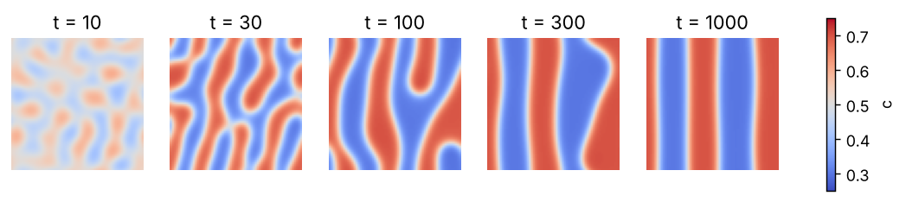

Curriculum/Computational labsLAB 506
Lab: Diffusion and phase separation with FiPy
Diffusion controls how fast steel is carburised, how a coating interdiffuses with its substrate, how precipitates grow and how a microstructure coarsens. In this lab you solve the diffusion equation with the open-source finite-volume package FiPy, first for a practical problem with a known analytical answer (the carburising of steel), then for a concentration-dependent diffusivity, and finally for the nonlinear Cahn–Hilliard equation, in which diffusion drives a mixture to separate into two phases. FiPy was developed at NIST for exactly this kind of materials problem: you write the equation in a form that is very close to the mathematics and the program does the discretisation.
- Reading time
- about 25 min
- Leads to
- —
- Level
- Graduate: simulation methods
- Install FiPy and translate $\partial c/\partial t=\nabla\cdot(D\nabla c)$ into a few lines of code.
- Apply fixed-value and zero-flux boundary conditions and compare with the erf solution.
- Measure the errors from the mesh size and the time step and see which one dominates.
- Handle a diffusivity that depends on concentration and recover $D(c)$ with the Boltzmann–Matano method.
- Solve the Cahn–Hilliard equation, check mass conservation and the decrease of the free energy, and measure the coarsening.
Step 1. Install#
python3 -m venv ~/venvs/fipy && source ~/venvs/fipy/bin/activate
pip install fipy numpy scipy matplotlib
python -c "import fipy; print(fipy.__version__)"4.0.3FiPy uses its own solvers through scipy by default, which is sufficient for the problems here; for large problems it can use PETSc or Trilinos (see its documentation at pages.nist.gov/fipy). Its newer versions (4.x) expect a recent NumPy.
Step 2. Carburising of steel#
A low-carbon steel containing $C_0=0.2$ wt% carbon is heated to $927{}^\circ$C (austenite, fcc) in a carbon-rich gas that holds the surface at $C_s=1.0$ wt% C. Carbon diffuses in, hardening the surface layer (the case). Fick’s second law with constant $D$ in one dimension, $\partial c/\partial t=D\,\allowbreak \partial^2c/\partial x^2$, has the solution for a semi-infinite solid
$$\frac{C_s-C(x,t)}{C_s-C_0}=\mathrm{erf}\!\left(\frac{x}{2\sqrt{Dt}}\right)$$
(CMS 504). The diffusivity of carbon in austenite is $D=D_0e^{-Q/RT}$ with $D_0=2.3\times10^{-5}$ m$^2$/s and $Q=148$ kJ/mol. In FiPy the mesh is a Grid1D, the unknown a CellVariable, the boundary condition at the surface a constrain, and the equation is written as TransientTerm() == DiffusionTerm(coeff=D). Each call of eq.solve advances one implicit time step; a boundary face without a constraint has zero flux, which here represents the unreachable far end:
"""Carburising of steel: Fick's second law solved with FiPy and compared with the analytical erf solution."""
import numpy as np
import fipy as fp
from scipy.special import erf
R = 8.314
D0, Q = 2.3e-5, 148e3 # carbon in austenite (gamma-Fe): D = D0 exp(-Q/RT), m^2/s, J/mol
Cs, C0 = 1.0, 0.2 # surface and initial carbon content, wt%
def D_of(T_celsius): return D0 * np.exp(-Q / (R * (T_celsius + 273.15)))
def simulate(T_celsius=927.0, hours=10.0, depth=3e-3, nx=300, nsteps=100):
D = D_of(T_celsius); t_end = hours * 3600
mesh = fp.Grid1D(nx=nx, Lx=depth)
c = fp.CellVariable(mesh=mesh, value=C0, name="carbon")
c.constrain(Cs, mesh.facesLeft) # fixed surface concentration (carburising atmosphere)
eq = fp.TransientTerm() == fp.DiffusionTerm(coeff=D) # the far end has zero flux (default)
for _ in range(nsteps): eq.solve(var=c, dt=t_end / nsteps)
return mesh.cellCenters.value[0], c.value.copy(), D, t_end
def analytic(x, D, t): return Cs - (Cs - C0) * erf(x / (2 * np.sqrt(D * t)))
if __name__ == "__main__":
print("T (C) D (m^2/s)")
for T in (800, 900, 927, 1000): print("%5d %.2e" % (T, D_of(T)))
x, c, D, t = simulate()
ca = analytic(x, D, t)
print("\nT = 927 C, 10 h: sqrt(D t) = %.3f mm" % (1e3 * np.sqrt(D * t)))
print(" depth (mm) FiPy (wt% C) erf solution")
for xd in (0.25e-3, 0.5e-3, 1.0e-3, 1.5e-3, 2.0e-3):
i = np.argmin(abs(x - xd)); print(" %.2f %.4f %.4f" % (1e3 * x[i], c[i], ca[i]))
print(" maximum difference over the whole profile: %.2e wt%%" % abs(c - ca).max())
# case depth: depth at which the carbon content falls to 0.5 wt%
i = np.where(c < 0.5)[0][0]; xcase = np.interp(0.5, c[::-1], x[::-1])
from scipy.optimize import brentq
z = brentq(lambda z: erf(z) - (Cs - 0.5) / (Cs - C0), 0.01, 3)
print(" case depth (0.5 wt%% C): FiPy %.3f mm ; analytic 2 z sqrt(D t) = %.3f mm (z = %.4f)" % (1e3 * xcase, 2e3 * z * np.sqrt(D * t), z))T (C) D (m^2/s)
800 1.44e-12
900 5.91e-12
927 8.32e-12
1000 1.95e-11
T = 927 C, 10 h: sqrt(D t) = 0.547 mm
depth (mm) FiPy (wt% C) erf solution
0.25 0.8005 0.8012
0.49 0.6168 0.6179
0.99 0.3582 0.3588
1.50 0.2429 0.2427
2.00 0.2082 0.2080
maximum difference over the whole profile: 1.11e-03 wt%
case depth (0.5 wt% C): FiPy 0.685 mm ; analytic 2 z sqrt(D t) = 0.687 mm (z = 0.6273)The first table shows how strongly $D$ depends on temperature: it is $1.44\times10^{-12}$ m$^2$/s at $800{}^\circ$C and $1.95\times10^{-11}$ at $1000{}^\circ$C, a factor of $13.5$ for $200$ K (Exercise 1 checks this number with the Arrhenius law). After $10$ hours at $927{}^\circ$C the diffusion length $\sqrt{Dt}$ is $0.547$ mm. The numerical profile agrees with the analytical one to better than $0.002$ wt% (maximum difference over the whole profile $1.1\times10^{-3}$ wt% C), and the case depth, the depth at which the carbon content has fallen to $0.5$ wt%, is $0.685$ mm from the simulation and $0.687$ mm from $x=2z\sqrt{Dt}$ with $\mathrm{erf}(z)=(C_s-0.5)/(C_s-C_0)$, that is $\mathrm{erf}(z)=0.625$ ($z=0.627$). A hand calculation of the same quantity needs only the diffusion length and the table of the error function, which is the usual way an engineer would estimate it; the simulation is needed when the problem leaves the textbook assumptions (finite thickness, variable $D$, several steps of temperature).
Step 3. Which error dominates: mesh or time step?#
The error of a numerical solution has several sources. Here two: the mesh size $\Delta x$ (the finite-volume scheme is second order in space) and the time step $\Delta t$ (the implicit Euler scheme is first order in time). The script varies one at a time against the exact erf solution:
"""Numerical errors of the diffusion calculation: mesh size and time step (implicit Euler)."""
import numpy as np
from carburising import simulate, analytic
print("mesh refinement (400 time steps)")
print(" cells dx (um) max error (wt%)")
for nx in (25, 50, 100, 200, 400, 800):
x, c, D, t = simulate(nx=nx, nsteps=400); print(" %5d %7.2f %.2e" % (nx, 3e3 / nx, abs(c - analytic(x, D, t)).max()))
print("\ntime step (800 cells)")
print(" steps dt (s) max error (wt%)")
for ns in (5, 10, 20, 40, 80, 160, 320):
x, c, D, t = simulate(nx=800, nsteps=ns); print(" %5d %7.0f %.2e" % (ns, 36000 / ns, abs(c - analytic(x, D, t)).max()))mesh refinement (400 time steps)
cells dx (um) max error (wt%)
25 120.00 1.52e-03
50 60.00 5.87e-04
100 30.00 3.53e-04
200 15.00 2.95e-04
400 7.50 2.80e-04
800 3.75 2.77e-04
time step (800 cells)
steps dt (s) max error (wt%)
5 7200 2.20e-02
10 3600 1.10e-02
20 1800 5.51e-03
40 900 2.76e-03
80 450 1.38e-03
160 225 6.90e-04
320 112 3.45e-04In the first table the error falls from $1.5\times10^{-3}$ wt% (25 cells, $\Delta x=120$ µm) to $2.8\times10^{-4}$ and then stops falling: the remaining error is that of the time step ($\Delta t=90$ s) and no refinement of the mesh can reduce it. In the second table, with a fine mesh, the error is halved each time the step is halved ($2.2\times10^{-2}$, $1.1\times10^{-2}$, $5.5\times10^{-3}$, …, $3.5\times10^{-4}$): first order, as expected, and the largest steps (a few thousand seconds, comparable with the time in which the profile develops) are crude. The consequence for practice: always refine both, and refine the one that dominates; a mesh finer than needed for the time step is wasted computation. Because implicit Euler is unconditionally stable, a large time step does not blow up, but it is inaccurate: stability is not accuracy.
With an explicit (forward Euler) scheme the stability condition is $D\Delta t/\Delta x^2\le\tfrac12$. For $\Delta x=7.5$ µm and $D=8.3\times10^{-12}$ m$^2$/s this means $\Delta t\le3.4$ s: more than $10\,000$ steps for the $10$ hours, against the $100$ implicit steps used above. For fine meshes and long physical times implicit schemes are therefore essential (COMP 201).
Step 4. Concentration-dependent diffusivity and the Boltzmann–Matano method#
In many alloys $D$ depends on composition by orders of magnitude. The equation $\partial c/\partial t=\partial_x[D(c)\partial_xc]$ is now nonlinear, so FiPy iterates (sweep) at every time step until the residual is small. The coefficient is evaluated at the cell faces: D(c.faceValue). The script solves a semi-infinite problem with $D(c)=10^{-12}(1+9c)$ m$^2$/s (tenfold increase from $c=0$ to $1$) and tests two properties:
- Boltzmann scaling. For a semi-infinite solid with a fixed surface concentration the solution depends only on $\eta=x/\sqrt t$, even if $D$ depends on $c$: profiles at different times must collapse onto one curve when plotted against $\eta$.
- Boltzmann–Matano analysis. Substituting $c(\eta)$ in the equation gives $D(c^*)=-\tfrac12\,\allowbreak (\mathrm d\eta/\mathrm dc)\int_0^{c^*}\eta\,\allowbreak \mathrm dc$ with $c^*$ the concentration of interest. This is how $D(c)$ is extracted from the measured profile of a diffusion couple.
"""Concentration-dependent diffusion D(c): the profiles collapse onto one curve of x/sqrt(t) (Boltzmann), and D(c) can be recovered from the profile (Boltzmann-Matano)."""
import numpy as np
import fipy as fp
D = lambda c: 1e-12 * (1 + 9 * c) # diffusivity increases tenfold from c = 0 to c = 1 (m^2/s)
L, nx = 3e-3, 600
profiles = {}
for t_end in (3600.0, 14400.0, 57600.0): # 1 h, 4 h, 16 h
mesh = fp.Grid1D(nx=nx, Lx=L)
c = fp.CellVariable(mesh=mesh, value=0.0, hasOld=True); c.constrain(1.0, mesh.facesLeft)
eq = fp.TransientTerm() == fp.DiffusionTerm(coeff=D(c.faceValue))
nsteps = 200
for _ in range(nsteps):
c.updateOld(); res = 1e9
while res > 1e-8: res = eq.sweep(var=c, dt=t_end / nsteps) # sweeps to converge the nonlinearity D(c)
profiles[t_end] = (mesh.cellCenters.value[0].copy(), c.value.copy())
print("collapse test: concentration at fixed eta = x/sqrt(t) for three times")
print(" eta (um/sqrt(s)) c(1 h) c(4 h) c(16 h)")
for eta in (0.5, 1.0, 2.0, 3.0, 4.0, 5.0):
row = [np.interp(eta * 1e-6 * np.sqrt(t), x, c) for t, (x, c) in profiles.items()]
print(" %5.1f %.4f %.4f %.4f" % ((eta,) + tuple(row)))
# Boltzmann-Matano analysis of the 16 h profile
t = 57600.0; x, c = profiles[t]
eta = x / np.sqrt(t)
cc, ee = c[::-1], eta[::-1] # increasing concentration for the integration
print("\nrecovered diffusivity (16 h profile)")
print(" c D from the profile (m^2/s) true D(c) error")
for c_star in (0.1, 0.3, 0.5, 0.7, 0.9):
m = cc <= c_star
integral = np.trapezoid(ee[m], cc[m])
deta_dc = np.interp(c_star, cc, np.gradient(ee, cc))
Drec = -0.5 * deta_dc * integral
print(" %.1f %.3e %.3e %+.1f %%" % (c_star, Drec, D(c_star), 100 * (Drec / D(c_star) - 1)))collapse test: concentration at fixed eta = x/sqrt(t) for three times
eta (um/sqrt(s)) c(1 h) c(4 h) c(16 h)
0.5 0.9251 0.9250 0.9249
1.0 0.8454 0.8452 0.8450
2.0 0.6724 0.6719 0.6714
3.0 0.4832 0.4824 0.4816
4.0 0.2860 0.2849 0.2838
5.0 0.1069 0.1057 0.1047
recovered diffusivity (16 h profile)
c D from the profile (m^2/s) true D(c) errorThe concentrations at a fixed $\eta$ agree for $1$, $4$ and $16$ hours to $0.0002$ at $\eta=0.5$ and to $0.002$ at $\eta=5$ (the small residual drift is the time-discretisation error again). The Boltzmann–Matano formula applied to the simulated profile recovers the input diffusivity within $1.5\%$ for $c^*\ge0.3$ and $3.5\%$ at $c^*=0.1$, where the profile is steep and few points are available. The same analysis applied to an experimental profile has additional errors from the noise and the finite resolution of the measurement (electron microprobe, etc.), and these are the largest at the ends of the concentration range: the result at low and high $c$ is the least reliable.
Step 5. Spinodal decomposition: the Cahn–Hilliard equation#
A homogeneous mixture that is quenched into a region where it is unstable separates into two phases without a nucleation barrier. The free energy of an inhomogeneous system with concentration $c(\mathbf r)$ is a functional
$$F[c]=\int\Bigl[f(c)+\tfrac12\kappa|\nabla c|^2\Bigr]\mathrm dV,$$
where $f(c)$ is the free-energy density of a uniform system (here a double well, as in the model of LAB 505 below the miscibility gap) and the gradient term $\tfrac12\kappa|\nabla c|^2$ penalises sharp interfaces and gives them a finite width and energy (CMS 505). The chemical potential is $\mu=\delta F/\delta c=f'(c)-\kappa\nabla^2c$, and since the matter flux is $\mathbf J=-M\nabla\mu$ and matter is conserved, the Cahn–Hilliard equation reads
$$\frac{\partial c}{\partial t}=\nabla\cdot\bigl(M\nabla\mu\bigr),\qquad\mu=f'(c)-\kappa\nabla^2c.$$
It is of fourth order in space, and it has two properties that serve as checks of any code: the total amount $\int c\,\mathrm dV$ is conserved (the equation is a divergence), and $F$ never increases (the dynamics is the steepest descent of $F$ with respect to a conserved quantity). In our model $f=\rho(c-c_\alpha)^2(c_\beta-c)^2$ with $c_\alpha=0.3$, $c_\beta=0.7$, $\rho=5$, $\kappa=2$ and $M=5$ (dimensionless units). FiPy handles the fourth-order term as two coupled second-order equations for $c$ and $\mu$ (called psi in the script) solved together with eq1 & eq2; the nonlinearity is handled by repeated sweeps until the residual is small, and the coupled system is solved with the direct solver LinearLUSolver. The script runs a $64\times64$ periodic box, started from $c_0=0.5$ plus random noise of $\pm0.01$, with a time step that grows when the iterations converge quickly:
"""Spinodal decomposition: Cahn-Hilliard equation in 2D with FiPy (mixed form, two coupled equations)."""
import numpy as np, time
import fipy as fp
nx = ny = 64; dx = 1.0
mesh = fp.PeriodicGrid2D(nx=nx, ny=ny, dx=dx, dy=dx)
c_alpha, c_beta, rho, kappa, M = 0.3, 0.7, 5.0, 2.0, 5.0 # equilibrium compositions, barrier, gradient coefficient, mobility
c0 = 0.5
np.random.seed(1)
c = fp.CellVariable(mesh=mesh, name="c", hasOld=True, value=c0 + 0.02 * (np.random.random(nx * ny) - 0.5))
psi = fp.CellVariable(mesh=mesh, name="psi", value=0.0) # chemical potential
f = rho * (c - c_alpha) ** 2 * (c_beta - c) ** 2 # bulk free-energy density: double well
dfdc = 2 * rho * (c - c_alpha) * (c_beta - c) * (c_alpha + c_beta - 2 * c)
d2fdc2 = 2 * rho * ((c_alpha + c_beta - 2 * c) ** 2 - 2 * (c - c_alpha) * (c_beta - c))
eq1 = fp.TransientTerm(var=c) == fp.DiffusionTerm(coeff=M, var=psi)
eq2 = fp.ImplicitSourceTerm(coeff=1, var=psi) == fp.ImplicitSourceTerm(coeff=d2fdc2, var=c) - d2fdc2 * c + dfdc - fp.DiffusionTerm(coeff=kappa, var=c)
eq = eq1 & eq2
solver = fp.LinearLUSolver(tolerance=1e-10) # direct solver: much faster than the default iterative solver for this coupled system
def free_energy():
gx, gy = c.grad.value
return float(np.mean(f.value + 0.5 * kappa * (gx**2 + gy**2)))
def length_scale():
"""Characteristic wavelength from the first moment of the structure factor."""
a = c.value.reshape(ny, nx) - c.value.mean()
S = np.abs(np.fft.fft2(a)) ** 2
kx, ky = np.meshgrid(2 * np.pi * np.fft.fftfreq(nx, dx), 2 * np.pi * np.fft.fftfreq(ny, dx))
k = np.hypot(kx, ky); S[0, 0] = 0
return 2 * np.pi * S.sum() / (k * S).sum()
print(" time dt mean c <c^2>-c0^2 free energy wavelength sweeps wall (s)")
t, dt, tmax, t0 = 0.0, 0.02, 1000.0, time.time()
out = [0.1, 1, 3, 10, 30, 100, 300, 1000]
snaps = {}
while t < tmax:
c.updateOld(); res, sweeps = 1e10, 0
while res > 1e-3 and sweeps < 12:
res = eq.sweep(dt=dt, solver=solver); sweeps += 1
t += dt
if out and t >= out[0]:
print(" %7.1f %6.3f %.6f %.5f %.5f %6.2f %3d %.1f" % (t, dt, c.value.mean(), (c.value**2).mean() - c0**2, free_energy(), length_scale(), sweeps, time.time() - t0), flush=True); snaps[out.pop(0)] = c.value.reshape(ny, nx).copy()
dt = min(dt * 1.15, 5.0) if sweeps <= 6 else (dt if sweeps <= 9 else dt * 0.6)
np.savez("snapshots.npz", **{f"t{k}": v for k, v in snaps.items()}) time dt mean c <c^2>-c0^2 free energy wavelength sweeps wall (s)
0.1 0.035 0.500028 0.00003 0.00800 9.90 3 2.9
1.1 0.163 0.500028 0.00003 0.00800 13.88 3 7.7
3.2 0.433 0.500028 0.00004 0.00800 14.45 5 11.3
10.2 0.658 0.500028 0.00169 0.00767 14.37 8 23.1
30.8 0.871 0.500028 0.01678 0.00571 16.60 7 53.4
101.1 1.751 0.500028 0.02387 0.00413 22.36 7 115.9
302.5 2.664 0.500028 0.02850 0.00301 29.08 7 207.2
1003.0 5.000 0.500028 0.02897 0.00290 29.59 4 322.0
real 5m22.687s
user 4m54.846s
sys 0m24.732s"""Snapshots of the spinodal decomposition run (saved by spinodal.py) and the equilibrium compositions reached."""
import numpy as np, matplotlib
matplotlib.use("Agg")
import matplotlib.pyplot as plt
d = np.load("snapshots.npz")
times = [10.0, 30.0, 100.0, 300.0, 1000.0]
keys = {t: [k for k in d.files if abs(float(k[1:]) - t) / t < 0.05][0] for t in times}
fig, ax = plt.subplots(1, 5, figsize=(11, 2.5))
for a, t in zip(ax, times):
im = a.imshow(d[keys[t]], cmap="coolwarm", vmin=0.25, vmax=0.75, origin="lower"); a.set_title(f"t = {t:g}"); a.axis("off")
fig.colorbar(im, ax=ax, shrink=0.8, label="c"); fig.savefig("spinodal.png", dpi=130, bbox_inches="tight")
c = d[keys[1000.0]]
print("final snapshot: fraction of cells with c < 0.5 = %.3f ; mean of c in the low-c phase = %.3f ; in the high-c phase = %.3f" % ((c < 0.5).mean(), c[c < 0.5].mean(), c[c >= 0.5].mean()))
print("5th and 95th percentile of c in the final snapshot: %.3f and %.3f ; minimum %.3f, maximum %.3f" % (np.percentile(c, 5), np.percentile(c, 95), c.min(), c.max()))
print("equilibrium compositions of the double well: 0.300 and 0.700; lever rule for c0 = 0.5: equal fractions")final snapshot: fraction of cells with c < 0.5 = 0.495 ; mean of c in the low-c phase = 0.336 ; in the high-c phase = 0.660
5th and 95th percentile of c in the final snapshot: 0.301 and 0.699 ; minimum 0.300, maximum 0.700
equilibrium compositions of the double well: 0.300 and 0.700; lever rule for c0 = 0.5: equal fractions
Read the results as a series of checks.
- Conservation. The mean concentration is $0.500028$ at every output time (it equals the mean of the initial noise): the scheme conserves matter to six digits over the whole run.
- Free energy. The mean free-energy density falls monotonically from $0.0080$ to $0.0077$, $0.0057$, $0.0041$, $0.0030$ and $0.0029$: the system descends the energy landscape. The decrease is largest during the early separation ($t=10$ to $30$) and nearly stops at $t=300$–$1000$ when only straight interfaces remain.
- The initial wavelength. Linearise the equation about $c_0$ for a perturbation $\propto e^{\sigma t}\cos(\mathbf k\cdot\mathbf r)$: $\sigma(k)=-Mk^2[f''(c_0)+\kappa k^2]$. For $c_0=0.5$, $f''(0.5)=2\rho[(c_\alpha+c_\beta-2c_0)^2-2(c_0-c_\alpha)(c_\beta-c_0)]=-0.8<0$ (inside the spinodal, the range $0.385<c<0.615$ where $f''<0$): perturbations of wavenumber $k^2<0.4$ grow, the fastest at $k_m^2=-f''/2\kappa=0.2$, i.e. wavelength $2\pi/k_m=14.05$ and growth rate $\sigma_m=0.4$. The simulation gives $13.9$ at $t=1.1$ and $14.4$ at $t=3.2$ (the wavelength is the first moment of the structure factor): the analytical prediction is confirmed. Outside the spinodal ($f''>0$) all perturbations decay, and the mixture can only separate by nucleation of the second phase (Exercise 5).
- The early picture. At $t=10$ the amplitude is still small ($\langle c^2\rangle-c_0^2=0.0017$, against $0.04$ for complete separation into $0.3$ and $0.7$ in equal parts) and the pattern has the wavelength of the fastest mode; by $t=30$ the domains have reached the equilibrium compositions and are separated by interfaces ($\langle c^2\rangle-c_0^2=0.017$).
- Coarsening. Afterwards the interfaces shorten to reduce their energy, and the structure coarsens: the wavelength grows from $16.6$ ($t=31$) to $22.4$ ($t=101$) and $29.1$ ($t=303$), a local power law $L\propto t^{0.25}$ (exponents $0.25$ and $0.24$ for the two intervals), compared with the Lifshitz–Slyozov value $1/3$ for bulk diffusion. By $t=1000$ the domains have become stripes that span the periodic box and the evolution stops at $L=29.6$, close to the limit set by the box size ($64/2=32$ for one pair of stripes): an artefact of the small cell, not of the physics. Reliable coarsening exponents need boxes much larger than the final domain size and averages over several noise realisations.
- The equilibrium compositions. The final snapshot has a minimum of exactly $0.300$ and a maximum of $0.700$: the compositions $c_\alpha$ and $c_\beta$ of the common tangent of the double well. The mean of $c$ over the cells with $c<0.5$ is $0.336$, not $0.300$, because this average includes the diffuse interfaces ($0.495$ of the cells are in the low-$c$ half).
A first attempt with FiPy’s default linear solver and a step controller that cut the time step whenever more than four sweeps were needed needed $185$ s only to reach $t=0.1$ in a $100\times100$ box and was stopped after $8$ minutes. Two changes made the run ($5$ min $22$ s for $t=1000$): the direct LinearLUSolver for the coupled system, and a controller that lets the step grow ($\times1.15$ per step up to $5$) when the nonlinear iteration converges in at most $6$ sweeps. A fourth-order equation is stiff: the stable step of an explicit scheme scales as $\Delta x^4$, so an implicit scheme and a good solver are mandatory. When a simulation is slower than expected, measure where the time goes before changing the physics.
Step 6. Typical problems#
| Symptom | Cause | Fix |
|---|---|---|
| Profile is flat or oscillates | units: $D$ in m$^2$/s but time in hours, or lengths in mm | Use SI units throughout and convert at the input and output only |
| Result changes when only the mesh is refined | the time step dominates the error (Step 3) | Refine both; report the observed order |
| Nonlinear problem does not converge | time step too large for the nonlinearity, or the coefficient is evaluated at the old time level | Use sweep repeatedly with c.updateOld() before each step; reduce the step |
| Mean concentration drifts in a closed system | a boundary has a non-zero flux, or the solver tolerance is loose | Check the boundary conditions; use a tight solver tolerance |
| Free energy increases during a Cahn–Hilliard run | time step too large or the inconsistent linearisation | Reduce the step; check that all terms use the same c |
| Very slow solution of the coupled system | default iterative solver on a stiff system | solver=fp.LinearLUSolver() for small and medium meshes |
| Pattern is a set of parallel stripes only | the periodic box is small compared with the domain size | Use a larger box, several random seeds, and report the box size |
- FiPy solves transport equations by the finite-volume method: a mesh, CellVariable objects and equations written as TransientTerm() == DiffusionTerm(coeff=D); boundary conditions are set with constrain, and each solve call advances one implicit time step.
- For carburising of steel at 927 C (D = 8.3e-12 m2/s) the simulated profile matches the error-function solution to 1.1e-3 wt% and the case depth to 0.5 wt% carbon after 10 h is 0.685 mm (analytic 0.687 mm); the error is dominated by the time step (first order, halving dt halves the error) once the mesh has more than about 100 cells.
- With a concentration-dependent diffusivity D(c) the profiles still collapse as a function of x divided by the square root of time (Boltzmann), and the Boltzmann-Matano formula recovers D(c) from one profile to within 1.5 per cent for c between 0.3 and 0.9 of the surface value.
- The Cahn-Hilliard equation dc/dt = div(M grad mu) with mu = f'(c) - kappa laplacian(c) conserves the mean composition (0.500028 at all times) and lowers the free energy (0.0080 to 0.0029); from c0 = 0.5, inside the spinodal, the fastest-growing wavelength is 2 pi/sqrt(0.2) = 14.05 and the simulation gives 13.9 to 14.4.
- Phase-separated domains coarsen and finally reach the equilibrium compositions of the double well (minimum 0.300 and maximum 0.700 in the final snapshot); in a small periodic box the late stage is limited by the box (stripes spanning the cell), so coarsening exponents measured in such runs (about 0.25 here) must be quoted with that limitation.
Exercises#
(a) Verify the ratio $D(1000{}^\circ\mathrm C)/D(800{}^\circ\mathrm C)=13.5$ of Step 2 with the Arrhenius law for $Q=148$ kJ/mol. (b) How long must steel be carburised at $927{}^\circ$C to reach $0.5$ wt% C at a depth of $1$ mm (with $C_s=1.0$ and $C_0=0.2$ wt%, $D=8.32\times10^{-12}$ m$^2$/s)? (c) And at $1000{}^\circ$C ($D=1.95\times10^{-11}$ m$^2$/s)?
Hint
$x=2z\sqrt{Dt}$ with $z=0.6273$ for this case.
Full solution
(a) $D(T_2)/D(T_1)=\exp[(Q/R)(1/T_1-1/T_2)]$ with $T_1=1073.15$ K and $T_2=1273.15$ K: $Q/R=17\,801$ K and $(1/1073.15-1/1273.15)=1.4638\times10^{-4}$ K$^{-1}$, so the exponent is $2.606$ and the ratio $13.5$. (b) $t=(x/2z)^2/D=(10^{-3}/1.2546)^2/8.32\times10^{-12}=6.35\times10^{-7}/8.32\times10^{-12}=7.64\times10^4$ s $=21.2$ h. (c) At $1000{}^\circ$C: $t=6.35\times10^{-7}/1.95\times10^{-11}=3.26\times10^4$ s $=9.1$ h. Raising the temperature by $73$ K cuts the time by $2.3$; the depth grows with $\sqrt t$, so twice the depth takes four times longer.
(a) $13.5$ (b) $21.2$ h (c) $9.1$ h
An explicit (forward Euler) scheme is stable only if $D\Delta t/\Delta x^2\le\tfrac12$. For the carburising problem at $927{}^\circ$C ($D=8.32\times10^{-12}$ m$^2$/s), (a) find the largest stable time step for $\Delta x=7.5$ µm and the number of steps for $10$ h; (b) the same for $\Delta x=3.75$ µm; (c) why do implicit schemes make the second halving of the mesh cost almost nothing in terms of the number of steps?
Hint
$\Delta t_\mathrm{max}=\Delta x^2/2D$.
Full solution
(a) $\Delta t=(7.5\times10^{-6})^2/(2\times8.32\times10^{-12})=3.38$ s, so $36\,000/3.38=10\,650$ steps. (b) Halving $\Delta x$ divides the maximum step by four: $0.85$ s and $42\,600$ steps. (c) The implicit scheme is stable for any step, so the number of steps is chosen by the accuracy of the time integration ($100$–$400$ steps in Step 3) and not by the mesh; the cost per step grows only linearly with the number of cells for a tridiagonal system in 1D. The cost of the explicit scheme grows as $\Delta x^{-3}$ in 1D ($\Delta x^{-2}$ steps times $\Delta x^{-1}$ cells) and as $\Delta x^{-4}$ in 2D, which is prohibitive for fine meshes.
(a) $3.4$ s, $10\,650$ steps (b) $0.85$ s, $42\,600$ steps (c) stability is unconditional
From the time-step table of Step 3, the error at $320$ steps is $3.45\times10^{-4}$ wt%. (a) Predict the error at $640$ steps. (b) How many steps are needed for an error below $10^{-4}$ wt%? (c) Why is the error at $25$ cells in the first table of Step 3 larger than at $800$ cells but about the same order as the time-step error at $40$ steps?
Hint
First order in time means error $\propto\Delta t$.
Full solution
(a) First order: halving $\Delta t$ halves the error, so $1.7\times10^{-4}$ wt%. (b) The error is $\approx3.45\times10^{-4}\times(320/n)$; setting this to $10^{-4}$ gives $n=1100$ steps ($\Delta t=33$ s). (c) With only $25$ cells ($\Delta x=120$ µm, a fifth of the diffusion length $0.55$ mm), the second-order spatial error is $1.5\times10^{-3}$ wt%: it is comparable to the time error of $40$ steps ($2.8\times10^{-3}$) but at the finest meshes the spatial error is negligible. The practical rule is to balance the two so that neither dominates: the total error is about the larger of the two.
(a) $1.7\times10^{-4}$ (b) about $1100$ steps (c) balance spatial and temporal errors
In the Boltzmann–Matano table of Step 4 the error at $c^*=0.1$ ($-3.5\%$) is larger than at $c^*\ge0.3$ ($\le1.5\%$). (a) Give two numerical reasons. (b) How would the same analysis of an experimental profile differ? (c) Why is it useful that the profiles collapse as a function of $x/\sqrt t$?
Hint
The formula contains the slope $\mathrm d\eta/\mathrm dc$ and an integral from $0$ to $c^*$.
Full solution
(a) At low $c^*$ the front of the profile is steep (the diffusivity is small there), so the slope $\mathrm d\eta/\mathrm dc$ is a ratio of two small numbers over a few cells, and numerical differentiation on a finite mesh is inaccurate; and the integral $\int_0^{c^*}\eta\,\mathrm dc$ has few points. Mesh refinement near the front and a smaller time step reduce the error. (b) A measured profile has noise and a finite spatial resolution (the probe volume of a microprobe is $\sim1$ µm), the analysis needs the location of the Matano plane (here fixed by the boundary condition), and the noise is amplified by the differentiation: the result is least reliable at the ends of the concentration range and one needs smoothing or fitting. (c) If the profiles from different times do collapse, the diffusivity depends only on $c$ and the semi-infinite geometry applies; a failure of the collapse reveals a time-dependent boundary condition, a finite sample, or a diffusivity that depends on something else (a second diffusing species, stress).
(a) steep front, differentiation (b) noise and resolution (c) test of the model
Cahn–Hilliard with the model of Step 5. (a) Find the limits of the spinodal region and the fastest-growing wavelength for $c_0=0.45$. (b) Predict what a run started at $c_0=0.35$ ($f^{\prime\prime}(0.35)=+0.55$) will do, and how the fraction of each phase at the end is related to $c_0$. (c) Which numbers in the output of the script would you check first to be sure that a modified run is correct?
Hint
$f^{\prime\prime}(c_0)<0$ is needed for the spinodal instability; $f^{\prime\prime}=2\rho[(c_\alpha+c_\beta-2c)^2-2(c-c_\alpha)(c_\beta-c)]$ with $c=0.5+u$ is $2\rho(6u^2-0.08)$.
Full solution
(a) $f^{\prime\prime}=0$ at $u=\pm\sqrt{0.08/6}=\pm0.1155$, so the spinodal is $0.385<c<0.615$. For $c_0=0.45$ ($u=-0.05$), $f^{\prime\prime}=10(6\times0.0025-0.08)=-0.65$ and $k_m^2=0.65/4=0.1625$, wavelength $2\pi/0.403=15.6$, and growth rate $\sigma_m=Mk_m^2(-f^{\prime\prime}-\kappa k_m^2)=5\times0.1625\times(0.65-0.325)=0.26$: slower than at $0.5$ ($0.4$). (b) At $c_0=0.35$ the uniform state is a metastable (outside the spinodal, $f^{\prime\prime}>0$): every small perturbation decays, so a run with only $\pm0.01$ noise will stay uniform to numerical accuracy; the separation requires a nucleus larger than a critical size (added by hand as a bump of amplitude $\gtrsim0.1$ over several cell widths) and then grows by diffusion. At the end the lever rule gives the fractions: $(0.7-0.35)/(0.7-0.3)=0.875$ of the low-$c$ phase and $0.125$ of the high-$c$ phase. (c) The mean concentration (must stay at its initial value), the free energy (must not increase), the minimum and maximum concentrations at late times (must approach $c_\alpha$ and $c_\beta$), and the number of sweeps per step (a rise signals a time step that is too large).
(a) $0.385$–$0.615$; $15.6$ (b) stays uniform unless nucleated; fractions $0.875$ and $0.125$ (c) mean, free energy, min and max, sweeps
Going further and references#
- Guyer, J. E., Wheeler, D. and Warren, J. A., “FiPy: Partial differential equations with Python”, Computing in Science & Engineering 11, 6 (2009); the FiPy manual and examples (
pages.nist.gov/fipy), which include the spinodal example used here, binary alloy solidification and phase-field models with anisotropy. - Crank, J., The Mathematics of Diffusion, Oxford University Press: the analytical solutions (Step 2) and the Boltzmann–Matano method; Shewmon, P., Diffusion in Solids and Porter, D. A. and Easterling, K. E., Phase Transformations in Metals and Alloys: the materials context, including carburising.
- Cahn, J. W. and Hilliard, J. E., “Free energy of a nonuniform system. I. Interfacial free energy”, Journal of Chemical Physics 28, 258 (1958); Cahn, J. W., Acta Metallurgica 9, 795 (1961): spinodal decomposition.
- Lifshitz, I. M. and Slyozov, V. V., Journal of Physics and Chemistry of Solids 19, 35 (1961): coarsening, $L\sim t^{1/3}$.
- Go further: compute the free energy $f(c)$ of the double well from a real thermodynamic database (LAB 505), add anisotropic gradient energy, or solve the same diffusion problem with finite elements (LAB 507).